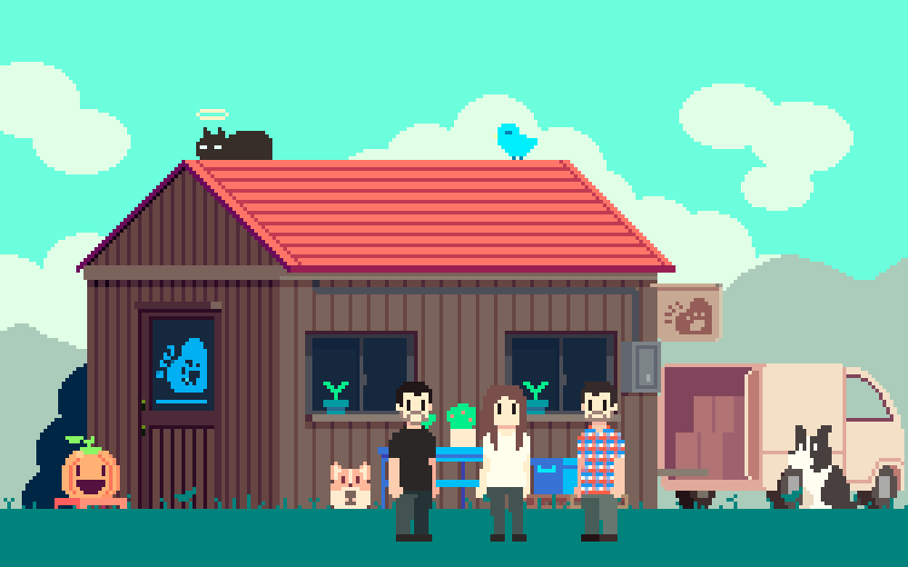

El término "Mascota Solidaria" donde la pasión por las mascotas se une con el compromiso social. Nuestra historia comenzó con un grupo de amigas unidas por el amor hacia los animales y el deseo de marcar la diferencia en el mundo. Lo que inició como una pequeña iniciativa de ventas en redes sociales para apoyar a una fundación sin fines de lucro, ha evolucionado hasta convertirse en algo mucho más grande.Nos enorgullece decir que cada producto que ofrecemos está diseñado con el cuidado y la dedicación que merecen nuestros amigos peludos. Desde bandanas coloridas hasta correas resistentes y encantadoras identificaciones, cada artículo es seleccionado con el objetivo de brindar calidad y estilo a tus mascotas, mientras contribuimos a una noble causa.
Nos comprometemos a enriquecer la vida de las mascotas y sus dueños a través de productos de calidad y un impacto social positivo. Nuestra misión es proporcionar a nuestros clientes no solo productos excepcionales para sus compañeros peludos, sino también una experiencia de compra que refleje nuestros valores de empatía, responsabilidad y compromiso..
